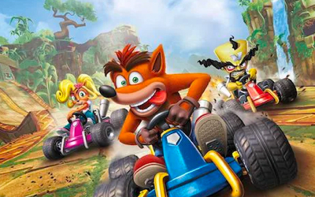
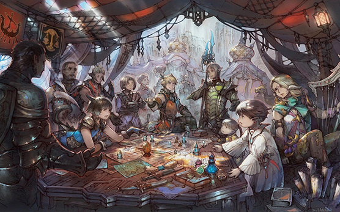

20 resultados para "Playstation"

Video
Apex Legends Temporada 2: un nuevo trailer muestra cambios al mapa
Dos nuevos trailers de Apex Legends muestran lo que nos espera en la Temporada 2 del battle royale de Respawn.
- 275
- 275
- 12

Noticia
Final Fantasy XIV recibirá una serie live-action en televisión
Final Fantasy XIV Online recibirá una adaptación a TV de parte de Square Enix con Sony Pictures Television y Hivemind.
- 275
- 275
- 12

Video
Ya salio la reseña de Crash Team Racing Nitro Fueled
Veinte años después del lanzamiento del original, Crash Team Racing ha recibido un remake total que logra mantener todos los aspectos originales.
- 275
- 275
- 12

Ya disponible
Final Fantasy XIV recibe el parche 5.55; todas las novedades y estreno en PS5
El MMORPG de Square Enix sigue creciendo y establece una hoja de ruta de contenidos de cara a la esperada cuarta expansión del juego, Endwalker..
- 275
- 275
- 12

Series
Final Fantasy XIV también tendrá su propia serie de televisión de acción real con Cid, chocobos, naves y más
Todavía no hemos podido ver la serie de Netflix basada en The Witcher, protagonizada por Henry Cavill en el papel de Geralt de Rivia..
- 247
- 105
- 56